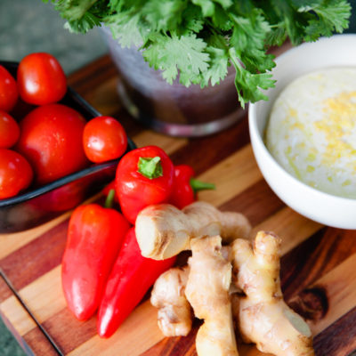
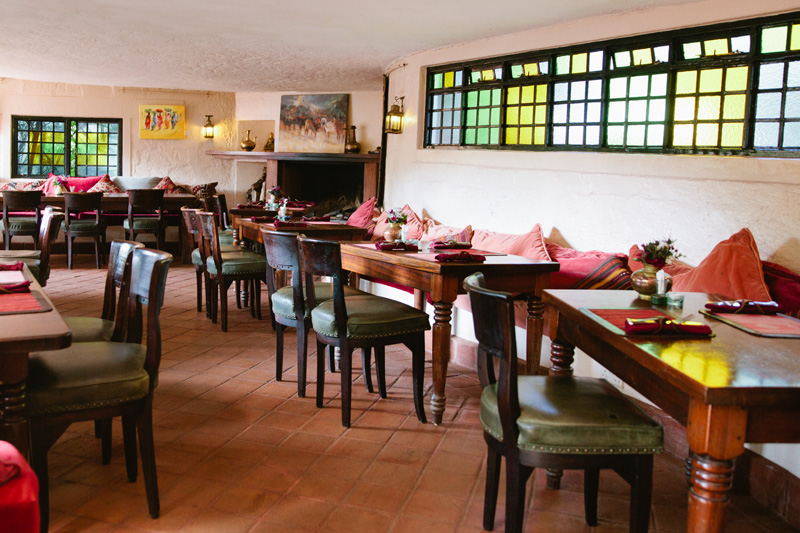
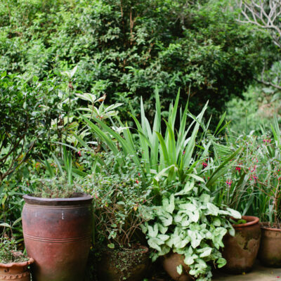
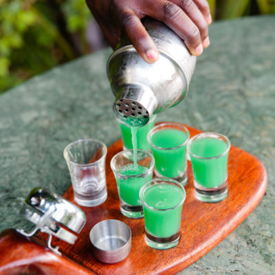
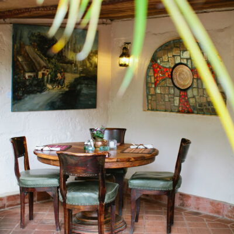
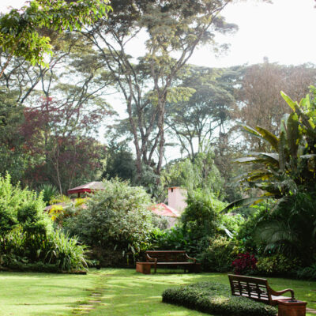

To start
Twice-Cooked Pork Belly
Honey soy glaze, charred vegetables and the kind of first bite that changes the pace of the table.

A hidden refuge in Karen
Garden light, long conversations, exceptional food and a house full of quiet corners.
Reserve your corner ↗The place
A place where lunch becomes afternoon, coffee becomes dinner and nobody checks the time too often.
The Talisman feels less like a restaurant and more like a house you were lucky enough to discover.




Gather around
Breakfast, sushi, comfort food, cocktails, tea, dessert and dinners that stretch into the evening.

Reasons to stay longer
Some restaurants feed you.